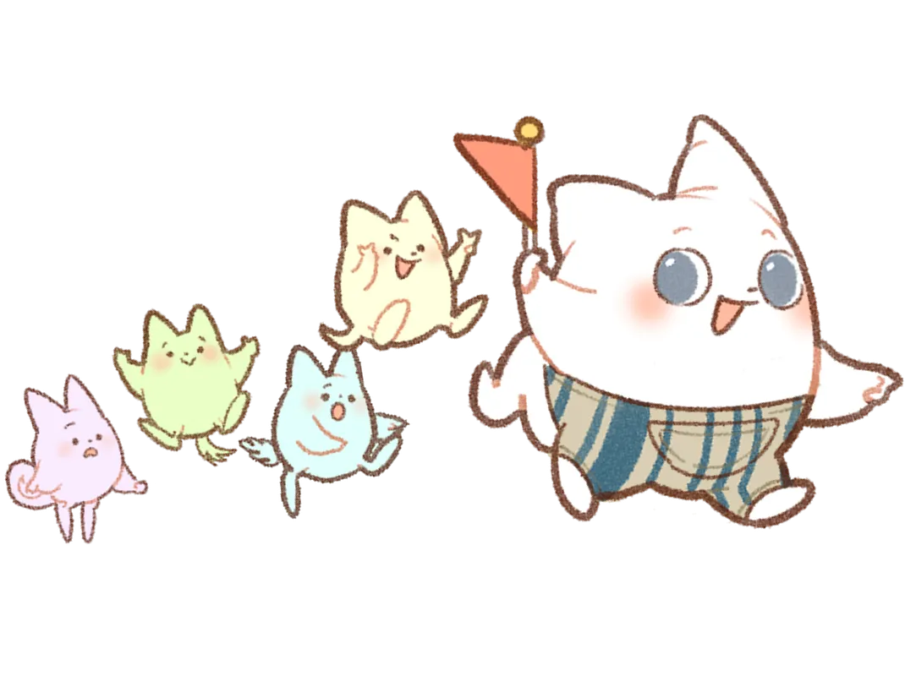

Smile Coordinate
自分らしく、優しい心を。
人はいつからでも変われる。もっと自分を解放して、笑顔でいられるように。


自分らしく、優しい心を。
人はいつからでも変われる。もっと自分を解放して、笑顔でいられるように。


私たちSmile Coordinateは『自分を大切にしてほしい』、『人はいつからでも変わることができる』ことを伝えていくことを目的に活動しています。
現在を変えるために必要なことは「本当に求めていること」に気づいて、それに向かって「行動すること」だと思います。
私は、それに気づくためのキッカケを作ります。
大事なのはタイミングとあなたの意識です。
今のあなたが気づけることに、気づいて受け止めていくことで、少しづつ変化していく私は思います。
人生は自分で選んだ道を進むもの。
無駄な思考から解放されることで、大きく日常が変化していきます。
Smile Coordinateは「コーチングやお悩み相談」で、バゲージ（不要な荷物、過剰な感情、無くて良い思考、他人の念やエネルギー）などを見つけ出して、捨てていく思考に変えていくキッカケをお渡しします。
コーチングとお悩み相談では、スタート地点や目的が異なります。
コーチングは「今を良い方向へ変化していく」、お悩み相談は「今の悩みを和らげるもしくは解消する」ことが目的です。どちらも今を変えることに変わらないのですが、先があるのと無いのでは大きな差があります。
「知る」
自分の特徴、特性を理解して自分を基準に考えられるようになり、あなた自身は何を求めていて、何をどのようにしたいのかを明確に。

「考える」
目的地に向かうために必要な課題を考えます。
目的地に向かうにはどうすると良いのか、自分に合うやり方を探しながら進んでいく。

「行動」
最後のステップでは課題をこなしていきます。
こちらで用意した、思考を変える課題を次回のセッションまでに完了する。

コーチングセッション目安時間 初回2~2.5時間 / 2回目以降（2時間）
※得られるものは人それぞれ異なります。今気づけた自分を褒めてあげてください。
2時間 15,000円 ~
（初回のみ2時間30分）
3回 40,000円
7回 90,000円
10回 125,000円
1カ月 (4回)/ 50,000円
2カ月 (8回)/ 130,000円
3カ月 (12回)/ 180,000円
※セッションはオンラインで行います。
今の自分にコーチングが「必要なのか分からない方」や「今の自分を知りたい方」は、下の「自分診断」をクリックしてみてください✨
無料相談が終わった後からでも本申し込みをご検討ください♪
診断するだけでも、思考がクリーンになると思うので、まずは、診断をしてみて無料相談を受けていただけると嬉しいです！
お問い合わせいただいた内容は1カ月間、安全に保存いたします。
※項目でお悩みの方はその他を選択してください。
※アドレスは連絡の取れるものを入力してください。
質問 / 無料相談 のどちらかにチェックをお忘れずに選択してください。 問い合わせいただいた内容について、しっかりとお答えできるように、「今お悩みされていること、考えていること」についてできるだけ具体的に教えてください。
ストレスや不安、悩みがあり、心のケアが必要と感じている方 目標設定や自己成長に向けて、具体的な行動計画を立てたい方 人間関係やキャリア、ライフスタイルに変化を求めている方 自己理解を深めたい、または新しい視点を取り入れたいと考えている方
無料剃談
コーチング: ・目標設定や具体的な行動計画の策定を通じ、前向きな変化を促すプロセスです。 カウンセリング: ・心の奥にある感情や思考に寄り添い、自己理解を深め、内面の課題に向き合うための対話を行います。 お客様のニーズに合わせて、最適なアプローチを提案いたします。
個人情報やセッション内容は厳重に管理し、第三者に漏洩しないよう万全の対策を講じています。 すべてのお客様が安心してご利用いただける環境作りに努めています。
個人情報やセッション内容は厳重に管理し、第三者に漏洩しないよう万全の対策を講じています。 すべてのお客様が安心してご利用いただける環境作りに努めています。
質問の場合は質問したいこと。無料相談ご希望の場合は、相談したい事の簡単な内容を記入してください。 お問い合わせの確認ができ次第、予約フォームをお送りします。また、公式LINEでもご予約ができますので是非ご利用ください。 ※予約日について：ご希望される日時で予約ができない場合があるので、予備日の選択もお願いいたします。 ※体調不良やご都合が悪くなった場合は、できるだけ早めにご連絡をお願いいたします。
知りたい事や分からないことについてのご連絡もお気軽にお問い合わせください。 こちらで確認でき次第お答えさせていただきます。 ・事業の〇〇について ・相談の申し込みの〇〇について ・コーチングの〇〇について ・事業サポートの〇〇について など記入をお願いします。
変化や気づきは個々で異なりますが、（どのように変化して、どんな気づき）があったのか共有していただきましたので、ご覧ください！